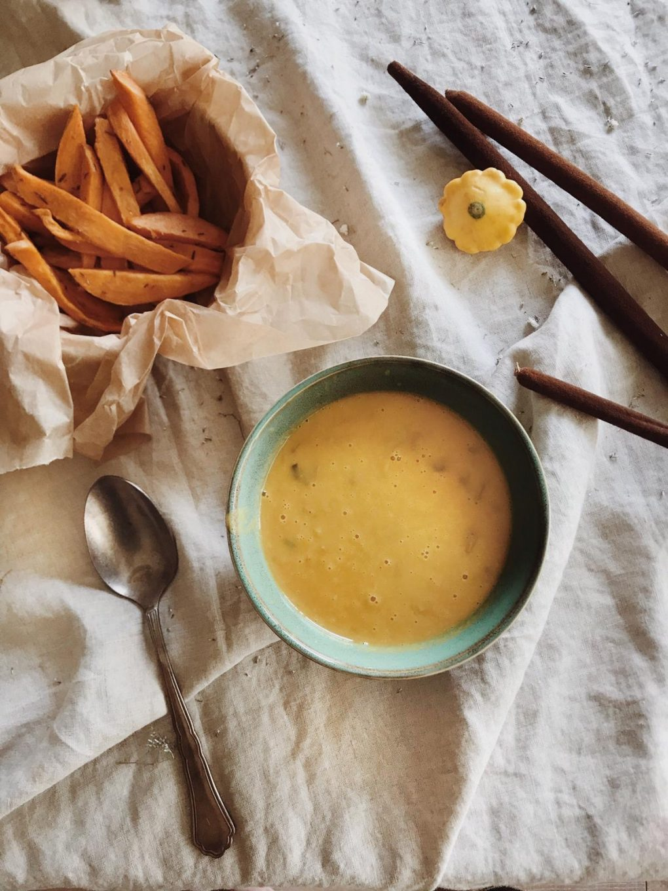

Zupa z batatów

Składniki
- 300g batatów
- 200g cukini
- Łyżeczka soli albo 3 łyżki bulionu
- 10g oleju rzepakowego
- 500g wody
- przyprawy
- Liść laurowy
- Łyczeczka bazylii
- Przyprawy własnego wyboru
Przygotowanie
- Obierz cukinie i bataty, następnie pokrój na mniejsze kawałki
- Wrzuć pokrojoną cukinie i bataty do Thermomix
- Ustaw 10 sekund obroty na 7
- Dodaj olej rzepakowy
- Ustaw 10 minut 120 C i obroty na 2 w Thermomix
- Po 10 minutach dolej wodę i przyprawy
- Ustaw 10 minut 100 C i obroty na 2 w Thermomix
- Po 10 minutach wyjmij liść laurowy
- Ustaw 10 sekund obroty na 7
- Podaj na 2 talerze
Main Page